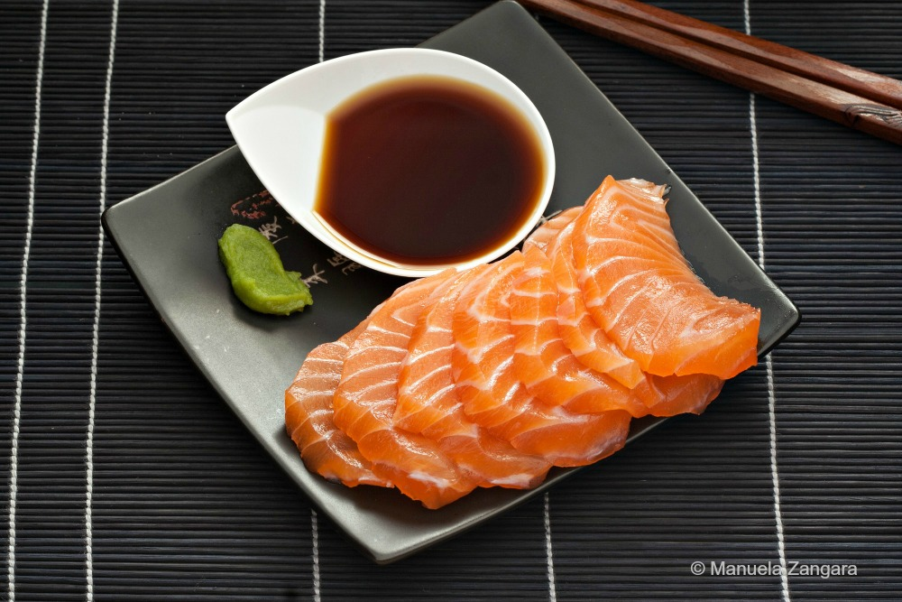

Salmon sashimi

How to make a Salmon sashimi
The salmon sashimi is one of the most traditional types of sushi.
the simplicity and flavor punch of the sashimi makes it one of the most ordered dishes in japanese restaurants
This guide contains the Instructions on how to make the Salmon sashimi
and the ingredients needed.
Ingridients
- fresh farmed salmon
- salt
- freezer bag (ziplock freezer bags or any that prevent freezer burn is great!)
Steps
- Get fresh salmon from your local market. I am using 1 pound salmon fillet
- Pat the salmon dry with a paper towel. Add 1 teaspoon salt (per pound) and let it sit for 20 minutes.
You will see that water will start coming out
- Rinse salmon with running water.
- Pay salmon dry with a paper towel, and store in a freezer bag.
- Freeze salmon for at least 7 days at -4°F (-20°C) to a month to kill parasites.
- When you’re ready to eat the salmon, defrost in the refrigerator the night before.
- Take salmon out of the refrigerator before eating and pat dry with a paper towel.
Slice and serve.
I like to eat with sushi rice and dip with wasabi & soy sauce.
If you have salmon skin left, don’t throw it away.
Fry in some oil for 5-7 minutes until crispy. It tastes like chips!
- Optional: I served the salmon sashimi with yuzu aioli for a slight citrus note.
You can also serve the sashimi with lemon, cucumbers, and avocado.
Home